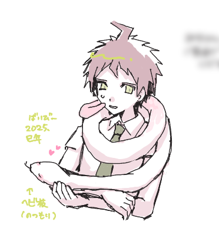
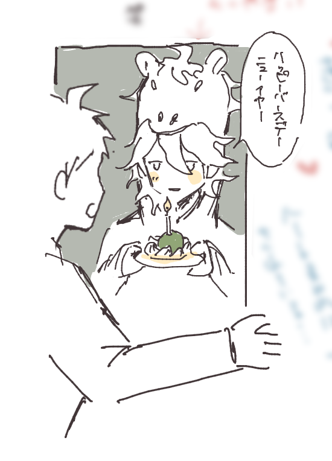
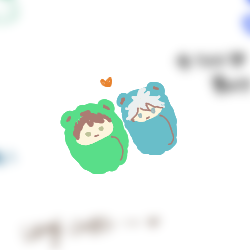
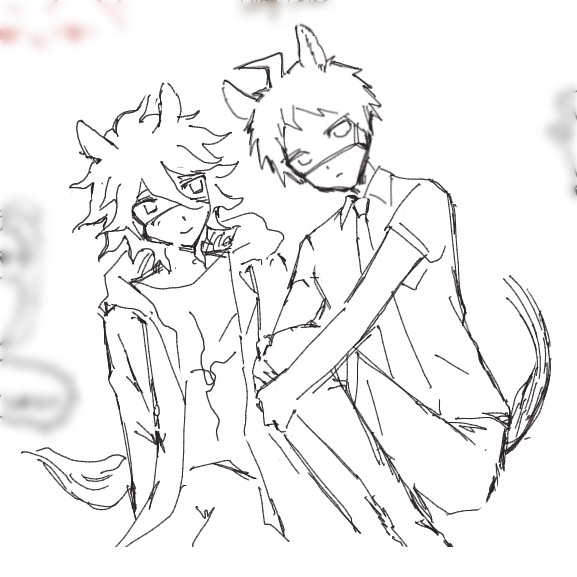

NOW LOADING…
（画像を読み込んでいます）
おおよそ時系列順（→↓NEW） ピンク色：追加・更新した作品 □：ノーマル絵のみ／■：CP、NSFW絵あり
＜注意＞このログは狛日、獣化（蛇化、馬耳・尻尾）の絵を含みます




2025〜26の年越し絵茶として、初めて主催してみたところたくさんの方にお越しいただき、愉快な年末になりました。感謝！今年もたくさん狛日に萌えるぞ〜ということでよろしくお願いいたします。（26年2月末のコメント）
NOMAL
CP・NSFW